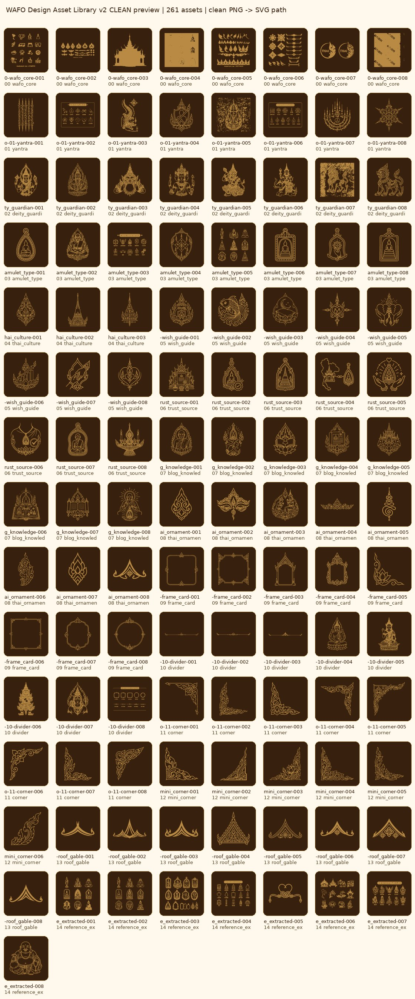

WAFO Design Asset Library
話佛牌設計素材庫：SVG、PNG、WebP 背景、CSS data URI、外部資產庫模板與 manifest。
SVG Icons512 tight, currentColor, 適合 CSS 控色。
Clean PNG 512透明 PNG，適合 Canva / Figma / 大顆圖示。
WebP Transparent透明裝飾版，適合網站輕量素材。
Background 1920大背景版，適合 Banner / 區塊底圖。
CSSdata URI 與外部 URL 模板。
Manifest分類、檔名、CSS class 對照。
GitHub Pages URL example:
https://BertWang.github.io/wafo-assets/assets/svg/00_wafo_core/wafo-00-wafo_core-001.svg
https://BertWang.github.io/wafo-assets/assets/svg/00_wafo_core/wafo-00-wafo_core-001.svg
